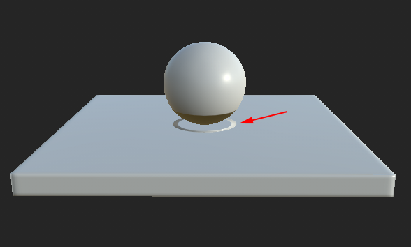

Mesh geometry bleeds on other parts and create artifacts.

The baking process sends rays from the low-poly mesh surface to hit the high-poly mesh to create a match. Sometimes the rays go too far and hit the wrong geometry, creating the bleeding and artifacts.
A few solutions are available to avoid this issue :